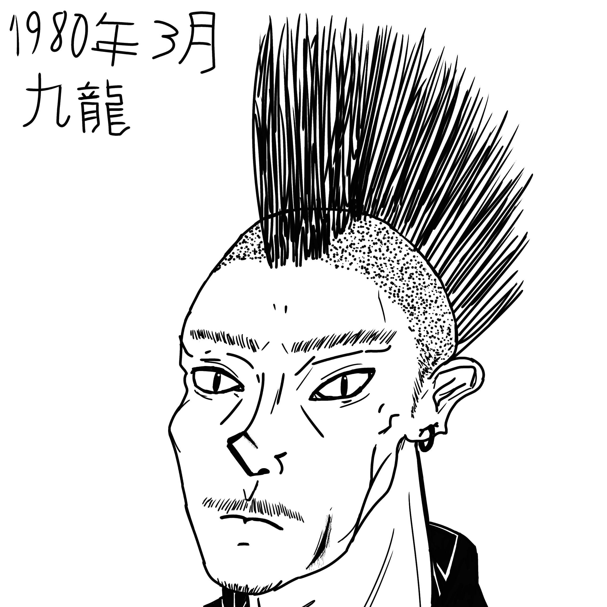

Meet The Phenoms
Lijun Jargalyn
Height: 5'4" / 162.5 cm.
Weight: 128 lb. / 58 kg. / 9.1 st.
Blood Type:
Hair Color: Jet Black
Eye Color: Deep Brown
Age: 24
Nationality: People's Republic of China
Bio: Chinese-born and of Tibetan and Mongolian heritage, he was always a trouble maker, a kind heart shielded by crime and roughed knuckles. He completed
high school out of respect for his parents, joining the PLA to get off the streets, he was then dishonorably dischared there for beating an officer who had
badmouthed him and his mates. Confident in his striking, he decided to learn Sanda while polishing up on skills in Hung-Gar he had learned as a child. He kept
a lot of targets on the streets in check with his striking, and fought professionally for the money globally. A fan of the classics, Lijun purchased a few imposing
firearms, like the "Box Cannon" used to intimidate his rivals in the Chinese underground.